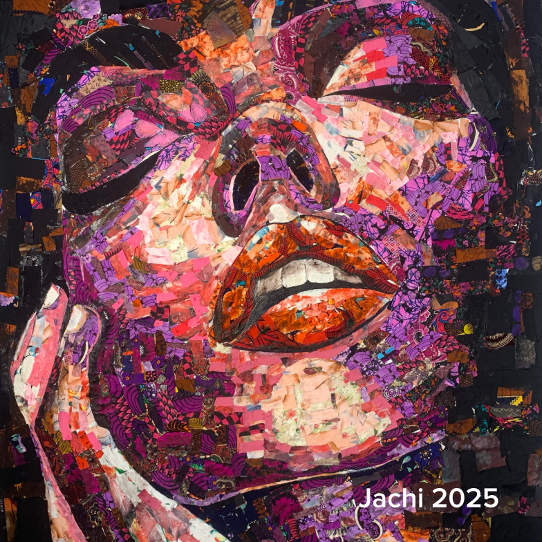
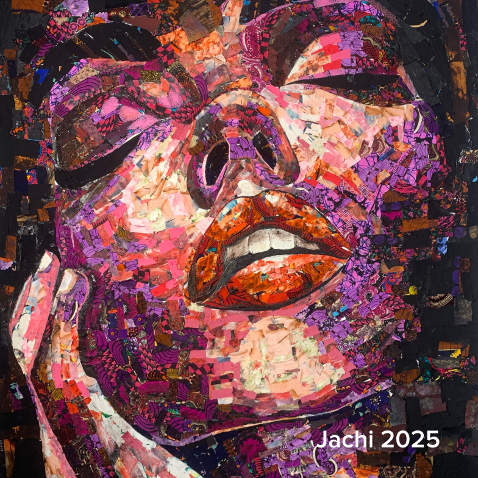
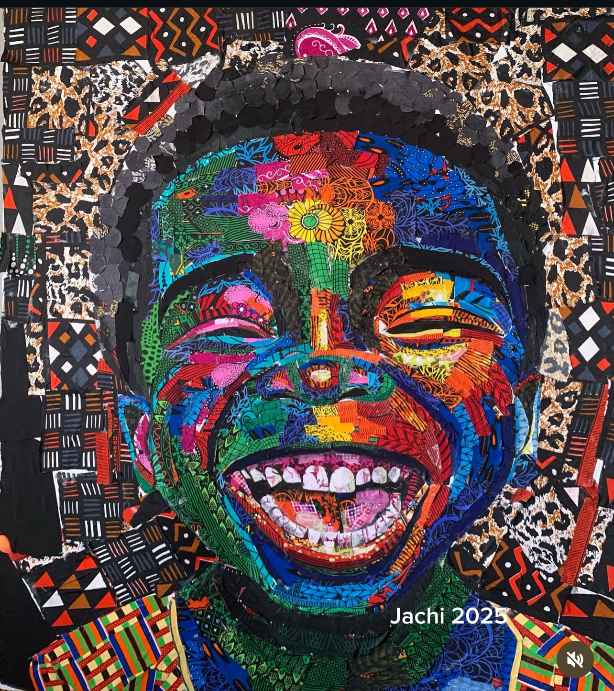
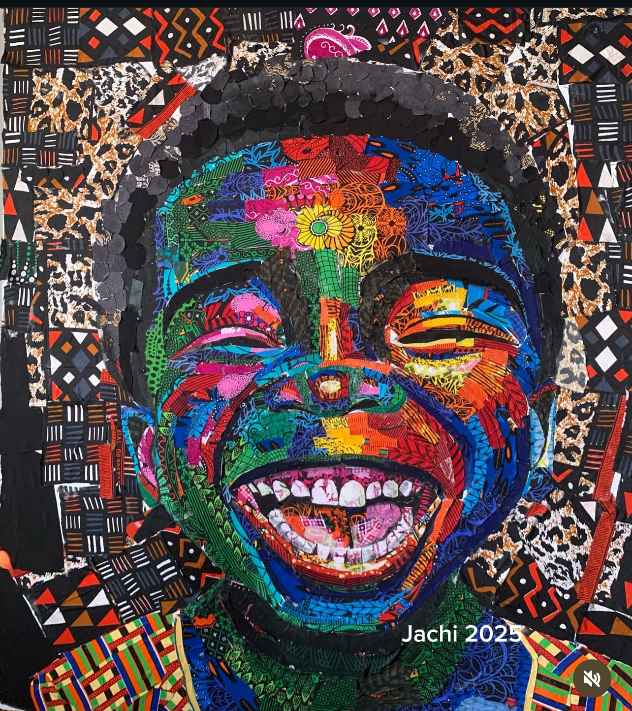
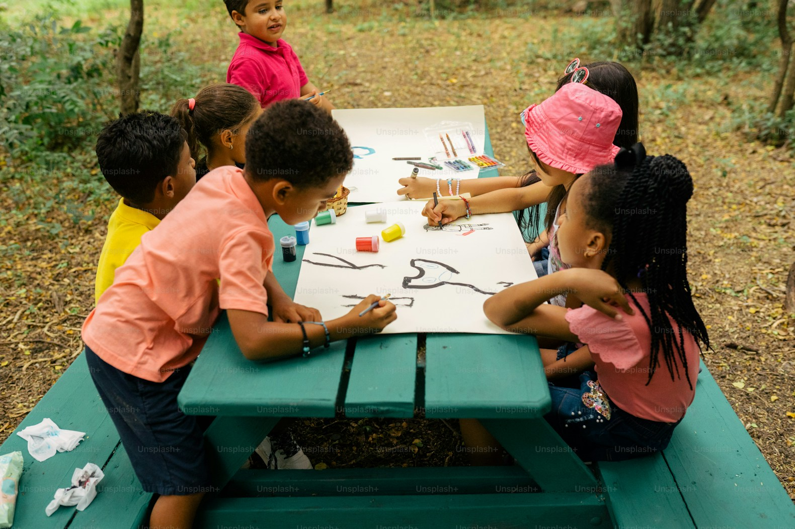

Solomon Chidinma is a Nigerian contemporary artist whose work centers on discarded fabrics and garments. Through a process of transformation, she reclaims what is worn, forgotten, and overlooked, creating pieces that speak to identity, resilience, and human value. Her practice reflects a deep engagement with memory, material history, and the lives embedded in used textiles.
JACHIE GALLERIE
 

 

OUR VISION PILLARS
Art & Cultural preservation
Using textiles to document identity, memory, and African heritage, ensuring stories are not lost but carried forward through art.

Sustainability & innovation
Reimagining textile waste as a resource ,turning what is discarded into objects of meaning, beauty, and cultural value.

Education & Community
Envisioning a future space for learning, mentorship, and creative exchange, supporting emerging artists and sustainable creative practices.
Sustainable Art House is a vision in development, a future physical space imagined to function as a studio learning hub and cultural resource. It represents what jachi Gallery aspires to build with the support of like-minded institutions, sustainality leaders and cultural partners.
Learn More
ART MADE
WITH LOVE
WITH LOVE

FAQ
What is sustainable art programme
Because I bring a blend of deep craft, clarity, and reliability to every project. With experience across UI/UX, motion design, and 3D visualization, I understand how to shape ideas into functional, visually compelling solutions while maintaining strong communication, clean processes, and consistent delivery. I approach every brief with intention, adaptability, and a commitment to creating work that genuinely moves the product forward.
What is sustainable art programme
You can start a project with me by simply reaching out through my contact form, socials or email with a brief overview of what you need. I’ll respond promptly, clarify your goals, and outline the next steps—usually a short discovery call, followed by a project proposal and timeline. Once we align, we begin.
What is sustainable art programme
My rates depend on the scope, complexity, and timeline of each project. I provide flexible pricing tailored to the specific needs of the work whether it’s UI/UX design, 2D motion, or 3D product visualization. Once I understand your goals and deliverables, I’ll share a clear proposal outlining costs, timelines, and what you can expect throughout the process.
What is sustainable art programme
The timeline for each project varies depending on its scope, complexity, and specific requirements. After understanding your goals, I provide a detailed project plan with clear milestones and estimated delivery dates, ensuring transparency and timely delivery while maintaining the highest quality standards.
What is sustainable art programme
I offer a comprehensive range of design services tailored to meet your unique needs, including UI/UX design, 2D and 3D design, motion graphics, and digital product strategy. My approach combines creativity, functionality, and user-centered design principles to deliver impactful solutions that drive results and elevate your brand.